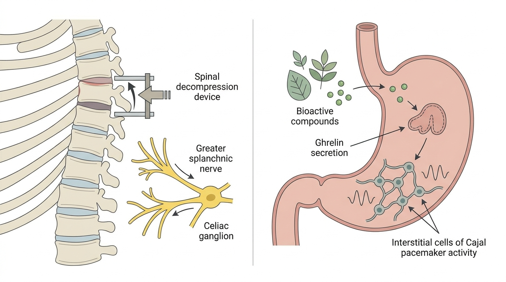

명치 밑이 꽉 막힌 듯한 속더부룩함과 잦은 트림, 흉요추 신경 부정렬이 만드는 위장 운동저하의 담적병 기전
흉요추 접합부의 생체역학적 부정렬은 대내장신경과 복강신경절을 기계적으로 압박하여 교감신경 과활성을 유발하고 이는 위장 평활근 연동 운동을 억제하는 방향으로 작용합니다. 이러한 구조적 병리를 해소하기 위해서는 신경 압박을 해제하는 척추 접근과 세포 수준의 위 배출능을 정상화하는 한약 약리 접근이 병행될 필요가 있습니다.
1. 흉추 분절 변위와 소화기 자율신경 차단에 따른 담적증후군의 구조적 원인
담적병으로 임상 현장에서 표현되는 만성적인 속더부룩함, 명치 밑 압박감, 잦은 트림 및 조기 포만감은 단순한 위산 과다나 식습관 문제로 설명되지 않는 경우가 상당수 관찰됩니다. 흉요추 접합부는 흉추의 후만 곡선과 요추의 전만 곡선이 교차하는 생체역학적 전환 지점으로, 이 부위의 미세한 회전 변위나 정렬 이상은 인접한 척추 분절을 통과하는 대내장신경 신경근에 지속적인 기계적 압박을 가할 수 있습니다.
대내장신경은 흉추 5번에서 9번 사이 분절에서 기시하여 복강신경절을 거쳐 위장, 소장 상부 등 상부 소화기관에 교감신경 자극을 전달하는 핵심 경로입니다. 이 신경 경로가 만성적인 자세 부정렬로 인해 지속적으로 압박받게 되면, 교감신경 긴장도가 과도하게 항진되어 위장 평활근의 연동 운동을 억제하는 방향으로 신호가 전달됩니다. 그 결과 위 내용물의 배출 속도가 느려지고, 소화되지 않은 음식물이 위장 내에 정체되면서 담적병 특유의 팽만감과 트림 증상이 나타나는 병리 기전이 형성됩니다.
또한 흉요추 접합부 부정렬은 횡격막의 자연스러운 가동성에도 영향을 미칩니다. 횡격막은 흉강과 복강을 구분하는 근육성 격막으로, 호흡 운동에 따라 위장을 포함한 상복부 장기를 마사지하듯 자극하여 소화관 연동을 보조하는 역할을 수행합니다. 흉요추 부위의 구조적 제한이 횡격막 운동 범위를 축소시킬 경우, 이러한 기계적 보조 자극이 감소하여 위장관 정체 현상이 더욱 심화될 수 있습니다.
2. 복강신경총 혈류 개선 및 위장관 연동 운동 회복을 위한 융합 치료 원리

담적병 및 기능성 소화불량의 구조적 병인을 해소하기 위해서는 두 가지 층위의 접근이 상호 보완적으로 작동해야 합니다. 첫째는 흉요추 접합부의 기계적 압박을 해소하여 신경학적 통로와 혈류 관류를 회복시키는 구조적 접근이며, 둘째는 세포 수준에서 위장관 운동을 조절하는 생리활성 물질의 작용을 통한 약리학적 접근입니다.
생체역학적 흉요추 접합부 공간 감압 추나(SART Protocol)는 해당 분절의 정렬을 교정하여 대내장신경 신경근과 인접한 복강신경절에 가해지던 기계적 압박을 완화하는 것을 목표로 합니다. 이러한 구조적 감압이 이루어지면 자율신경 유출 균형이 정상화되고 횡격막 가동 범위가 회복되며, 위장 및 상부 소화기관으로의 내장 혈류 관류가 개선되는 방향으로 작용할 수 있습니다. 이는 만성적인 자세 부정렬로 인해 유발된 교감신경 우위 상태에서 벗어나 위장 운동성이 억제되는 상황을 완화하는 선행 조건으로 기능합니다.
이러한 신경학적 및 혈류학적 기질이 정상화된 상태 위에서, 육군자탕에 포함된 반하 및 백출 유래 생리활성 성분은 순환 그렐린 농도를 증가시켜 카잘간질세포의 박동원 활성을 회복시키고 하부 식도괄약근의 긴장도를 정상화하는 세포 수준의 작용을 발휘하게 됩니다. 바디올한의원의 누적 담적 및 기능성 소화불량 임상 진료에서 관찰되는 위장관 연동 운동성 회복 및 복부 팽만 개선 경향은, 인용된 학술 연구[2]에서 입증된 육군자탕의 그렐린 매개 카잘간질세포 회복 기전과 학술적으로 궤를 함께합니다.
구조적 감압이 신경 및 혈류의 통로를 열어주는 역할을 수행하고, 한약의 파이토케미컬 작용이 세포 단위의 운동성 장애를 해소하는 역할을 담당함으로써, 이 두 접근은 각각 단독으로는 도달하기 어려운 담적병의 다층적 병리 구조를 통합적으로 다룰 수 있는 근거를 형성합니다.
| 구분 | 단순 제산제 및 소화제 | 생체역학적 흉요추 접합부 공간 감압 추나 및 hGMP 규격 체질 맞춤 한약 |
|---|---|---|
| 접근 원리 | 위산 분비 억제 또는 소화효소 일시 보충 | 대내장신경 압박 해소 및 카잘간질세포 박동원 활성 회복 |
| 작용 범위 | 증상 완화 위주의 대증적 접근 | 신경학적 원인과 세포 수준 운동성 저하를 동시 접근 |
| 위 배출능 개선 | 직접적 개선 근거 제한적 | 그렐린 분비 촉진을 통한 위 수용성 및 배출률 정상화 지향 |
| 구조적 원인 해결 | 척추 및 신경 압박 요인 미해소 | 흉요추 접합부 정렬 교정을 통한 근본 신경 경로 회복 지향 |
3. 흉요추 접합부(Thoracolumbar Junction) 생체역학적 부정렬에 따른 대내장신경(Greater Splanchnic Nerve) 과활성과 위 배출능(Gastric Emptying) 저하 및 담적병(기능성 소화불량) 병리 기전 연구 관련 학술 임상 논문 분석
담적병의 구조적 병인을 뒷받침하는 학술적 근거는 척추 신경 분절과 위장관 운동 기능의 연관성을 다룬 연구에서 확인할 수 있습니다. 본 연구는 흉추 신경 분절에 대한 신경조절 치료가 위마비 환자의 위장관 운동 기능에 관여함을 제시한 개념증명 연구로, 흉요추 접합부의 신경학적 조절이 위 배출능과 직접적으로 연동됨을 뒷받침하는 학술적 근거이다.[1] 이는 대내장신경과 복강신경절을 경유하는 교감신경 경로가 만성적인 자세 부정렬로 인해 기계적으로 압박될 경우, 위 운동성이 저하될 수 있다는 생체역학적 가설과 정확히 부합합니다.
따라서 생체역학적 흉요추 접합부 공간 감압 추나(SART Protocol)를 통해 해당 분절의 구조적 압박을 해소하는 것은, 정상적인 자율신경 유출과 횡격막 가동성을 회복시켜 위장관으로의 내장 혈류 관류를 개선하는 선행 조건으로 작용할 수 있습니다. 이러한 신경학적 통로의 회복은 이후 진행되는 한약 치료의 효과가 온전히 발현되기 위한 구조적 기반을 마련하는 것으로 해석됩니다.
한편 세포 수준의 약리학적 근거는 육군자탕의 그렐린 매개 작용을 다룬 문헌에서 확인됩니다. 본 초록에 따르면 육군자탕은 순환 그렐린 농도를 증가시키는 기전을 매개로 운동이상형 소화불량 및 상부 위장관 증상을 유의하게 개선시키는 것으로 밝혀졌다.[2] 이는 반하와 백출 유래 생리활성 성분이 그렐린 분비를 자극하여 카잘간질세포의 박동원 활성을 회복시키고 하부 식도괄약근의 긴장도를 정상화하는 세포 수준의 약리 기전으로 담적병의 병리를 직접 해소함을 시사합니다.
hGMP 규격 체질 맞춤 한약을 통한 이러한 생화학적 개입은 척추 감압을 통해 회복된 자율신경 및 혈류 기질 위에서 위 수용성과 배출률을 정상화하는 역할을 수행합니다. 즉 구조적 교정만으로는 도달할 수 없는 세포 단위의 운동성 장애를 이 처방의 파이토케미컬 작용이 해결함으로써, 담적병 및 기능성 소화불량에 대한 통합적 구조-약리학적 접근의 인과적 타당성이 학술적으로 뒷받침됩니다. 두 연구를 종합할 때, 척추 신경 경로의 구조적 회복과 한약 성분의 세포 수준 작용은 서로 다른 층위에서 담적병의 병리를 상호 보완적으로 다루는 것으로 이해할 수 있습니다.
4. 바디올 생체역학적 흉요추 접합부 공간 감압 추나 (SART Protocol) 및 담적 소화기 치료 솔루션
흉요추 접합부는 대내장신경이 통과하는 해부학적 요충지로, 이 부위의 압통이나 근긴장도 이상은 위장관 자율신경 조절 기능 저하와 연관될 수 있습니다. 따라서 담적병 진료 시 단순 소화기 증상 문진에 그치지 않고 흉요추 부위의 구조적 정렬 상태를 함께 평가하는 것이 병리 파악에 도움이 됩니다.
바디올한의원은 담적병 및 기능성 소화불량을 단일 원인이 아닌 구조적 신경 압박과 세포 수준의 운동성 저하가 복합적으로 작용하는 병리로 이해하고, 이에 상응하는 통합적 치료 프로토콜을 구성합니다. 생체역학적 흉요추 접합부 공간 감압 추나(SART Protocol)는 흉요추 접합부의 회전 변위 및 정렬 이상을 정밀하게 평가하고 교정하여 대내장신경과 복강신경절에 가해지는 기계적 부하를 완화하는 방향으로 진행됩니다.
이와 병행하여 hGMP 규격 체질 맞춤 한약을 통해 개별 체질과 병리 상태에 맞춘 육군자탕 계열 처방을 적용함으로써, 그렐린 분비 촉진과 카잘간질세포 박동원 활성 회복을 도모합니다. 바디올한의원의 생체역학적 흉요추 접합부 공간 감압 추나(SART Protocol) 및 hGMP 규격 체질 맞춤 한약 치료는 담적병 및 기능성 소화불량 증상에 대한 안전하고 객관적인 한의학적 보존 치료 선택지 중 하나로 고려될 수 있습니다.
담적병으로 명명되는 만성적인 속더부룩함과 트림 증상은 흉요추 접합부의 구조적 부정렬로 인한 신경학적 압박과 세포 수준의 위장관 운동성 저하가 결합된 다층적 병리로 이해될 필요가 있습니다. 구조적 감압과 한약 약리 개입을 병행하는 통합적 접근은 이러한 복합 병리를 다루는 학술적 근거를 갖춘 방법론입니다.
참고문헌
- Karunaratne, et al. (2023), 'Thoracic Spinal Nerve Neuromodulation Therapy for Diabetic Gastroparesis: A Proof-of-Concept Study', Clinical Gastroenterology and Hepatology. DOI: 10.1016/j.cgh.2022.09.012
- Hattori, et al. (2010), 'Rikkunshito and Ghrelin', International Journal of Peptides. DOI: 10.1155/2010/283549